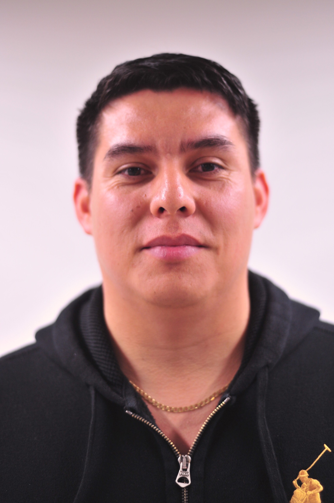

My name is Kerry Nordstrom and until this year my greatest coding achievement was making a button with a drop shadow. I'm originally from Cincinnati, OH and have a B. Phil in Interdisciplinary Studies from Miami University. I've been making my way across the country, having lived in Denver, CO for four years and now in Seattle, WA for the past three. I worked as a bicycle mechanic for the better part of a decade and most recently as a product data specialist at a outdoor goods company based in Seattle. I came to CodeFellows hoping to immerse myself in code so that I can be as versatile as possible in my next job search with hopes of moving abroad within the next 10 years! I love to ride my bike, take photos, listen to music, and hang out with my girlfriend of two years, Alicia.
Ariel Pedraza
My name is Ariel R. Pedraza, I am an identical twin born in New York, NY, grew up in North East Pennsylvania. I have formal education in computer science 10 years ago from the University of Scranton, but no work experience in the field. I joined the Air Force after school as a Network and System Administrator. I was stationed in Germany for 2 years and Korea for 4 years. I separated from the military and came back to the US summer of 2016, moved to Seattle January 2017. Worked at Microsoft as a support engineer for a few months after realizing I needed to get back into programming. Joined Code Fellows to create cool new things. Also, I just adopted a 3-month-old kitten, his name is Stitch and he is the best.

Andres Ibarra
My name is Andres Ibarra and I was born in Armenia, Colombia and raised in Queens, NYC. I joined the Army at the age of 18 and had the opportunity to serve in four combat tours in Iraq and two in Afghanistan. My last six years in the Army I was a Command and Control Systems Integrator responsible for the integration of all Air Defense Battle Command Systems and the deconfliction of Friendly Air Space. I spent a total of 15 years in the Army and medically retired on Aug 2017. I joined Code Fellows because I loved the fact that they are supportive of veterans and have a strong veteran alumni group. I hope to follow in the step of those before me, on my journey to sharpeninig my skills to be a great software developer.